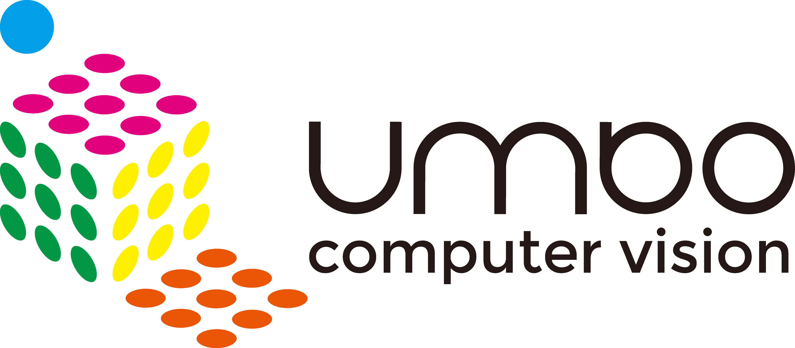

Hi! I am Roy

Experiences

Academia Sinica
Research Intern

Umbo Computer Vision Inc.
Quality Assurance Intern
Selected Projects

AI CUP 2020 Mango Image Recognition Challenge
Implemented DCGAN to generate more images as data augmentation with
PyTorch.
Trained 6 different classification models with Keras and used own written Adaboost to
fuse the best result.
Won the 2nd place in the class competition.
Code

NTHUEE Camp Website
Developed a web application with full functional Front-end and Back-end.
Website